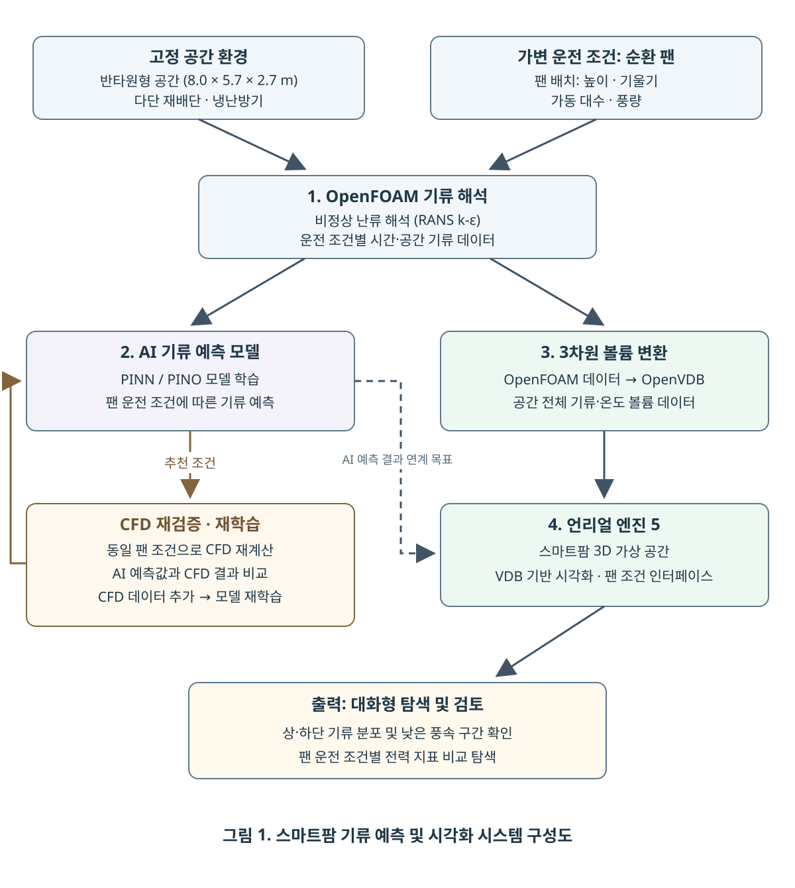
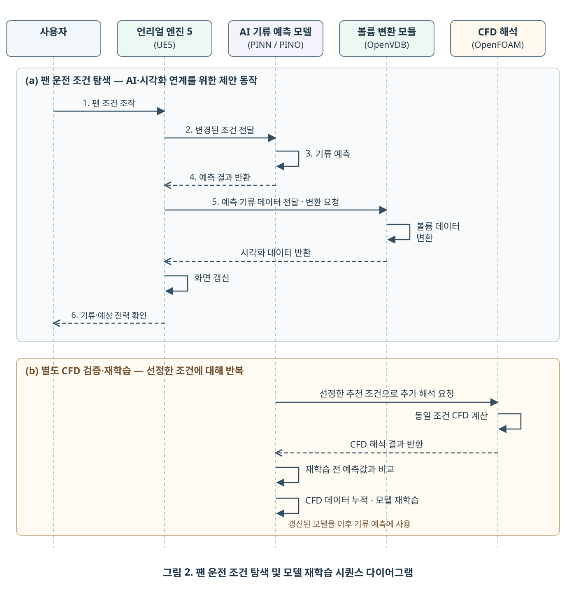

디지털 트윈을 활용한 스마트팜 기류 예측 및 시각화
초록
스마트팜 재배 공간에서는 냉난방기와 팬의 운전 조건에 따라 상·하단 재배단 간 기류 차이가 발생할 수 있어, 재배 환경과 설비의 전력 사용을 함께 고려한 운전 조건 탐색이 필요하다. 그러나 전산유체역학(CFD) 기반 수치해석은 운전 조건이 바뀔 때마다 계산을 반복해야 하므로 다양한 조건을 검토하는 데 시간과 연산 비용이 소요된다. 본 연구에서는 OpenFOAM으로 생성한 기류 해석 데이터를 이용해 물리정보 신경망(PINN) 및 물리정보 신경 연산자(PINO) 기반 예측 모델을 학습하고, 팬 운전 조건에 따른 기류 예측 결과를 학습에 사용하지 않은 조건의 CFD 결과와 비교·평가하였다. 또한 언리얼 엔진을 활용해 가상의 스마트팜 공간을 구현하고, 작업자가 운전 조건을 변경하며 예측된 기류 분포와 예상 전력 사용을 3차원 화면에서 확인할 수 있는 시각화 시스템 구조를 제안한다. 이를 통해 재배단별 기류와 전력 사용을 함께 살펴보며 적절한 공조 운전 조건을 효율적으로 탐색할 수 있는 기반을 제공한다.
Keywords: Smart Farm, Computational Fluid Dynamics (CFD), Physics-Informed Neural Network (PINN), Physics-Informed Neural Operator (PINO), Unreal Engine, Airflow Distribution
1. 서론
스마트팜 재배 공간에서는 냉난방기와 팬의 배치 및 운전 조건에 따라 재배 위치별 기류가 달라질 수 있다. 선행연구에서는 수직농장의 공기 유입·배출 위치에 따라 공간 내 온도와 기류의 균일성이 달라지는 것을 확인하였다 [1]. 따라서 재배단별 기류 분포를 균일하게 관리하면서도, 설비 운전에 필요한 전력 소비를 함께 고려할 필요가 있다. 이를 위해 전산유체역학(CFD)을 사용하여 다양한 운전 조건의 기류를 분석할 수 있지만, 조건이 바뀔 때마다 수치해석을 반복하는 데에는 시간과 연산 비용이 소요된다.
본 연구에서는 스마트팜 공간의 기류 예측과 시각화를 위한 시스템을 제안한다. OpenFOAM으로 생성한 CFD 데이터를 이용해 PINN 및 PINO 기반 예측 모델을 학습하고, 학습에 사용하지 않은 팬 운전 조건의 예측 결과를 동일한 조건의 CFD 결과와 비교하여 예측 오차를 평가하였다. 또한 언리얼 엔진을 활용하여 가상의 스마트팜 공간을 구현하고, 사용자가 운전 조건에 따른 기류 분포와 예상 전력 사용을 3차원 화면에서 살펴볼 수 있는 구조를 제시한다.
이를 통해 상·하단 재배단의 기류와 전력 사용을 함께 고려하여 공조 운전 조건을 탐색할 수 있는 기반을 마련하고자 한다.
2. 재료 및 방법
2.1 시스템 구성 및 CFD 해석

본 연구에서는 스마트팜 다단 재배 공간의 운전 조건에 따른 기류를 예측하고, 이를 3차원 가상 환경에서 검토하기 위한 시스템을 제안한다. 시스템은 그림 1과 같이 OpenFOAM 기반 CFD 기류 해석, AI 기류 예측 모델(PINN/PINO), 3차원 볼륨 변환, 언리얼 엔진 5(UE5) 기반 가상 환경의 네 모듈로 구성된다.
해석 대상은 가로 8.0 m × 깊이 5.7 m × 높이 2.7 m 크기의 반타원형 스마트팜 공간이다. 공간 형상과 재배단 구조, 냉난방기 공급 조건을 기본 환경으로 고정하고, 순환 팬의 배치(높이·기울기)와 가동 대수, 풍량을 변경하여 운전 조건별 시간·공간 기류 해석 데이터를 생성하였다. 해석 환경은 OpenFOAM의 실내 기류 및 열전달 해석 예제인 comfortHotRoom을 기반으로 구성하였다. 대상 공간에 맞게 형상과 경계조건을 수정하고, 시간에 따른 기류 및 온도 변화를 확인하기 위해 buoyantPimpleFoam 솔버와 표준 k-ε 난류 모델을 이용한 비정상 수치해석을 수행하였다.
생성된 CFD 데이터는 PINN 및 PINO 기반 기류 예측 모델의 학습에 활용된다. 특히 모델이 유망하다고 예측한 팬 운전 조건에 대해 동일 조건의 CFD 해석을 추가로 수행한 후, 예측 결과를 비교·검증하여 해당 CFD 해석 데이터를 학습 데이터에 누적하고 모델을 반복적으로 재학습하였다. 또한 CFD 해석 결과를 OpenVDB 형식으로 변환하여 공간 전체의 기류 및 온도 볼륨 데이터를 구축하고, 이를 언리얼 엔진 5 환경에서 3차원으로 시각화한다. 나아가 AI 예측 모델과 시각화 모듈의 연계를 통해, 사용자가 팬 운전 조건에 따른 기류 분포와 전력 지표를 3차원 화면에서 직관적으로 비교·검토할 수 있는 대화형 탐색 시스템 구조를 제시한다.
2.2 시스템 동작 순서

그림 2(a)는 사용자의 팬 운전 조건 변경에 따른 기류 예측 및 시각화의 제안 처리 순서를 나타낸다. 사용자가 언리얼 엔진 5 인터페이스에서 팬의 배치, 가동 대수 및 풍량을 변경하면 해당 조건을 AI 기류 예측 모델에 전달한다. 언리얼 엔진은 예측 결과를 반환받아 볼륨 변환 모듈에 전달하고, 변환된 데이터를 받아 화면을 갱신한다. 사용자는 기류 분포와 운전 조건에 따른 예상 전력 지표를 바탕으로 조건을 비교한다.
그림 2(b)와 같이 CFD 검증 및 재학습은 사용자 조작에 따른 예측·시각화와 별도의 절차로 구성한다. 모델이 제안한 조건 중 추가 검증 대상을 선정하여 동일 조건의 CFD 해석을 수행하고, 추가 학습 이전 모델의 예측 결과와 CFD 결과를 비교한다. 이후 해당 CFD 데이터를 학습 데이터에 누적하여 모델을 재학습하며, 선정한 조건에 대해 이 과정을 반복한다. 갱신된 모델은 이후의 기류 예측에 사용한다.
2.3 시스템 데이터 처리 프로세스
제안하는 시스템의 데이터 처리는 다음 네 모듈의 연계를 통해 수행된다.
1. CFD 해석 모듈
고정된 공간 형상과 격자, 경계조건을 기반으로 OpenFOAM 수치해석을 수행한다. 실내 기류 및 열전달 해석 예제인 comfortHotRoom을 기반으로 해석 환경을 구축하고, buoyantPimpleFoam 솔버와 표준 k-ε 난류 모델을 적용하여 순환 팬 운전 조건(배치 및 풍량)에 따른 시간·공간별 유속, 온도 및 난류 해석 데이터를 생성한다.
2. 데이터 변환 모듈
OpenFOAM 해석 결과는 팬 운전 조건과 공간 좌표, 유속 및 온도 정보를 대응시켜 정리한다. 정리된 데이터는 활용 목적에 따라 AI 모델 학습용 CSV(.csv) 데이터셋과 3차원 시각화용 OpenVDB(.vdb) 볼륨 데이터로 각각 가공한다. 시각화에 사용할 데이터는 언리얼 엔진의 좌표 체계와 단위에 맞추어 변환한다.
3. AI 기류 예측 및 재학습 모듈
고정된 공간 환경에서 입력된 팬 운전 조건에 따른 기류 분포를 PINN 및 PINO 기반 모델로 예측하고, 재배단별 풍속 특성과 기류 균일도를 평가하기 위한 지표를 산출한다. 모델이 제안한 조건 중 추가 검증 대상으로 선정된 조건은 동일 조건의 CFD 해석을 다시 수행하여 추가 학습 이전 모델의 예측 결과와 비교·검증한다. 새롭게 생성된 CFD 데이터를 기존 학습 데이터에 누적하고, 이를 바탕으로 재학습하여 갱신된 모델을 이후 운전 조건 탐색에 활용한다.
4. 3차원 시각화 모듈
언리얼 엔진 5는 전달받은 볼륨 데이터를 가상 스마트팜 공간에 렌더링한다. 팬 운전 조건에 따른 기류 분포와 별도로 산출한 예상 전력 지표를 인터페이스에 함께 표시하여, 사용자가 조건별 결과를 3차원 화면에서 직관적으로 비교·검토할 수 있도록 한다.
2.4 개발 환경
본 연구에서 제안하는 시스템의 구현을 위한 주요 하드웨어와 소프트웨어 개발 환경은 표 1과 같다. CFD 수치해석과 AI 모델 학습, 3차원 볼륨 시각화를 위한 개발 장비는 12코어 CPU와 16GB VRAM을 갖춘 GPU로 구성하였다. OpenFOAM 해석 및 볼륨 데이터 가공에는 WSL 2 기반 Docker 환경을 사용하여 프로그램 버전과 실행 환경을 통일하였다.
| 구분 | 항목 | 사양 및 버전 | 주요 역할 |
|---|---|---|---|
| 하드웨어 | CPU | AMD Ryzen 9 9900X (12코어) | CFD 수치해석 연산 |
| 하드웨어 | GPU | NVIDIA GeForce RTX 5060 Ti (16GB) | AI 모델 학습 및 3D 렌더링 |
| 하드웨어 | RAM | 64GB | 학습·볼륨 데이터 처리 |
| 소프트웨어 | OS | Windows 11 Pro (64비트) | 개발 및 시각화 구동 |
| 소프트웨어 | 실행 환경 | Docker Desktop / WSL 2 | 해석·변환 프로그램의 버전과 실행 환경 통일 |
| 소프트웨어 | CFD | OpenFOAM v2512 | 격자 생성 및 비정상 기류 해석 |
| 소프트웨어 | AI 개발 | Python 3.11.4 / PyTorch 2.11.0 | PINN/PINO 모델 학습·예측 |
| 소프트웨어 | 볼륨 가공 | OpenVDB | 풍속·온도 데이터를 .vdb로 변환 |
| 소프트웨어 | 3D 엔진 | Unreal Engine 5.8.3 | 가상 공간 및 기류 시각화 |
3. 결과
작성 예정
4. 논의
작성 예정
5. 결론
작성 예정
참고문헌
[1] 김경민, 정효혁, 이인복, “전산유체역학을 이용한 수직농장 내부 미기상 환경의 균일도 분석,” 생물환경조절학회지, 제35권, 제3호, pp. 262–273, 2026.